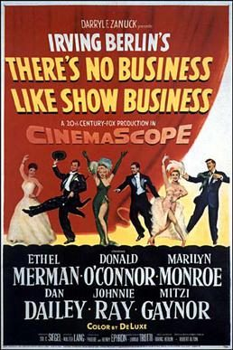

There's No Business Like Show Business
Starring: Ethel Merman, Dan Dailey, Donald O'Connor
Director: Walter Lang
Writer: Phoebe Ephron, Henry Ephron, Lamar Trotti
Producer: Sol C. Siegel
Irving Berlin's There's No Business Like Show Business is a 1954 American musical comedy-drama film directed by Walter Lang. It stars Ethel Merman, Donald O'Connor, Marilyn Monroe, Dan Dailey, Johnnie Ray, and Mitzi Gaynor. The title is borrowed from the song in the stage musical (and MGM film) Annie Get Your Gun.
Trivia
- Nominated for: Academy Award for Best Story; Academy Award for Best Costume Design, Color; Academy Award for Best Original Musical Score.
- Before the film's production, Marilyn Monroe had been placed on suspension from 20th Century-Fox after refusing to accept the leading role in a film version of a Broadway musical titled The Girl in Pink Tights.
- During her suspension, she married baseball star Joe DiMaggio and the two honeymooned in Japan, during which time she entertained American soldiers in Korea.
- Fox had intended to cast Sheree North in There's No Business Like Show Business, going so far as to screen-test North in Monroe's own studio wardrobe.
Previous Showings
3 Runs • 2 Festivals
Original Billings: 1 run (January 9, 1955)
Original Run: January 9, 1955 (Sunday - Thursday)
All runs on record (3):
- January 9, 1955 (Sunday - Thursday)Donald O'Connor, Marilyn Monroe, Ethel Merman
- May 18 - 19, 2013The 1950sw/ The Seven Year Itch
- July 22 - 23, 2026Summer 2026 including the Films of Marilyn Monroew/ The Princess and the Pirate